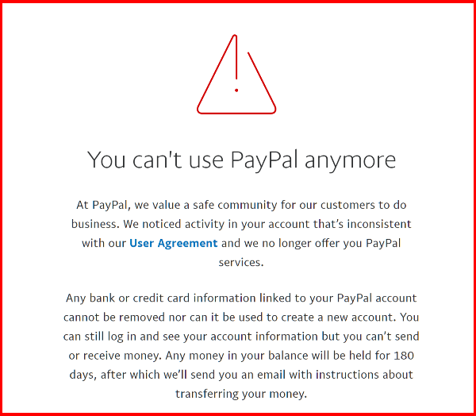

Daryush "Roosh" Valizadeh created ROK in October 2012. You can visit his blog at RooshV.com or follow him on Twitter and Facebook.


The past year has been rough for ROK. First, we were banned from just about every banner advertising network in existence, causing us to rely on less desirable pop-up ads. Secondly, we were banned from Paypal, which halted the donations you send us, an important source of operating revenue. I’ve had to let go ROK’s editor, Winston Smith, and offer less compensation to existing writers. One result of that is having to rely more on syndicated news articles that are not written in the ROK spirit.

Perhaps the biggest blow was getting shut down by Disqus. Overnight, hundreds of people we’ve banned in the past were allowed to comment again and spew their filth. Only now am I starting to get a handle on the trolling issue.
An additional trend that has been impacting ROK is the gradual shift from self-improvement and game to political activism (alt right/lite) and personal inaction (MGTOW, herbivore lifestyle, game shaming, etc.). For some men, it has become too hard to improve their station in life or pursue women, so they reject the core principles of active masculinity that we focus on.
It also doesn’t help that ROK, with over 5,000 articles published, has written about almost every topic under the sun. My occasional approval of Jew or race-baiting articles has become a crutch to satisfy a restless crowd, but at the cost of bringing in a type of reader who obsessively wants to only talk about Jews and black people.
Nonetheless, I still get numerous supportive email messages a month from men who share how much of a positive influence ROK has been on their lives. Here’s a recent example:
Hi. I wanted to thank you for the red pill. A long-time friend introduced me to the Manosphere about two years ago. My only regret is that is was not around 20 years ago. I know from following you online that it is a hard road for you to travel, but like any ideal who’s time has come there will be resistance at first until the brilliance of the innovation is realized. You have been a game changer for me and I thank you!
For instance, I met a clerk at Walmart he was morbidly obese. All I said was visit returnofkings.com. I forgot about it until four months later when he thanked me. He had lost 80 lbs already. It wasn’t me, it was you, that did that. One at a time your message will get out and win. Keep the faith. And thanks so much for showing me the light!
I’ve put a lot of blood, sweat, and tears since forming ROK in October 2012 to make it the best web site in existence for masculine men. I think I’ve achieved that goal, but its direction is no longer entirely in my hands. The power is yours to make ROK the site you want by contributing an article that contains your experiences, stories, knowledge, opinions, or soul, all in a way that can inspire other men to live better.
For every guest article you submit and I accept during the month of January, I will send you a $10 payment bonus via Litecoin, a popular cryptocurrency (amount will be determined at the time payment is sent according to the spot price on CoinMarketCap).
Use our submissions page to submit your article by January 31 to be eligible for the $10 bonus. Here are some tips on how to submit an article that I am likely to accept:
When you’re ready to submit, go to our submissions page. It has more details such as your ability to use a pseudonym. Remember to proofread your article! There is no limit to how many you can submit.
I will personally review all submissions. If you don’t get a response within a week, your article was rejected. If your article is almost up to standard, I will give guidance on how to improve it.
After your article goes live, you’ll have instructions on how to invoice me with your Litecoin public address so that I can pay you by the 10th of the following month. For example, if you invoice me in January for an article that went live that month, you will get paid by February 10. If you invoice me in February, you will get paid by March 10. You’re also eligible for this bonus if you’re an existing guest contributor who already has a writer’s account.
To receive payment in Litecoin, you need to create a Litecoin wallet. You can install a wallet on your desktop computer or on your mobile phone. Since we’re dealing with such a small amount of money, you don’t need to go crazy with security.
For desktop users, I recommend Electrum Litecoin Wallet, which I personally use.
For Android users, I recommend the Coinomi Wallet, which allows you to store over a dozen different currencies and exchange between them using two external services.
If you have an iPhone, your best option is Loaf Wallet, which is maintained by the Litecoin Foundation.
I look forward to seeing your submissions in the upcoming days. Understand that I don’t have substantially more control over the direction of ROK than you do. While I have the power to screen which articles get published, if no article is submitted by readers, there is no ROK, unlike my personal blog whose fate I completely control.
For the month of January, I hope you submit the type of article that inspires other men not only to take action in their own lives, but to submit future articles which start a chain reaction of inspiration and motivation. For every unit of value you give to the community, I’m confident you’ll receive far more back.
ROK is completely what you make of it, and to give you an extra push, I will be parting with some of my Litecoin, and who knows, that $10 may be worth significantly more in a year or two.
Read Next: How To Become A More Persuasive Writer By Channeling Homer